来源：https://og53xet0f4.feishu.cn/docx/O03dderEGo8Z4VxN4ZRcT2QFn1b
大家好，我是涛仔，曾是一名大厂HR，也是个一直折腾不止的人。
大学那会儿就开始创业，最高的时候一个月能做到1万多的收入。
后来进了前千亿大厂，稳定4年后，今年5月正式辞职，开启自由职业生活。
其实早在3年前我就加入了生财有术这个圈子，靠着研究公众号写作，跑出过爆文，也短暂尝试过做内容变现。但当时我觉得项目太依赖平台了，不够稳定，干脆放弃。
直到这次参加AI写作项目，我才意识到：原来内容变现可以换种打法。
我按着航海手册一步步实操，去了淘宝村接单，没想到真跑通了——稿费到账518元，虽不多，却是我AI写作的0到1。
现在回头看，那些经历也许正是为了让我在这条新航线上有更多可能。
话不多说，上分享：
一、成交过程展示
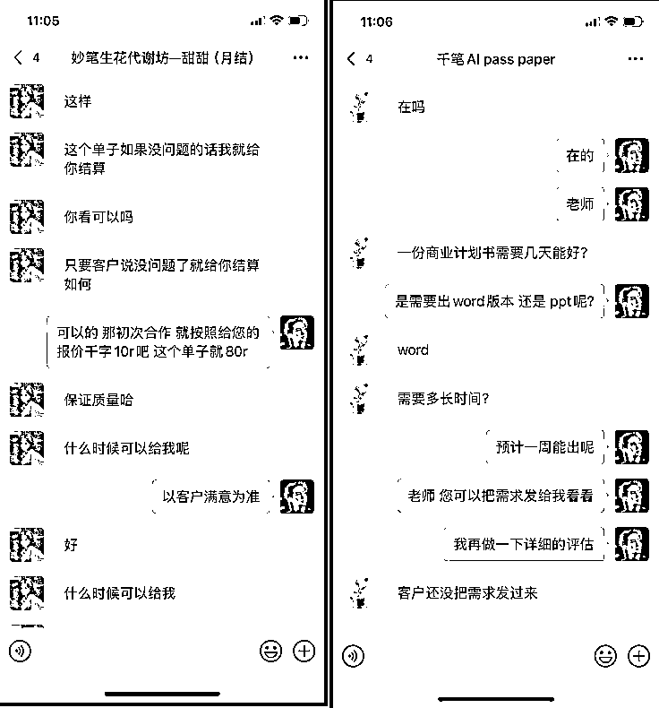
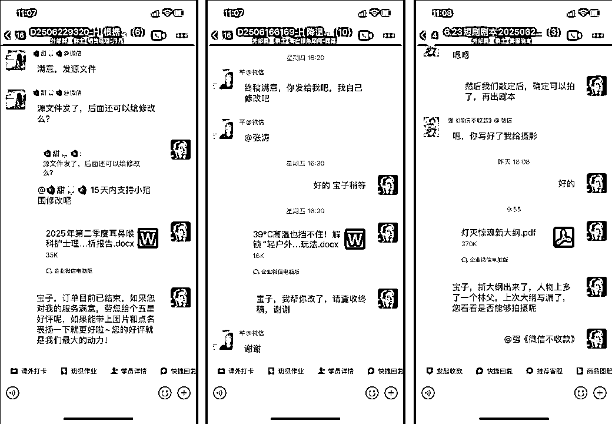
二、分享大纲介绍
1.项目选择
2.项目实操
3.最后寄语
三、主体内容
1.项目选择
新手选择互联网项目，低成本、快变现、高天花板是不可能三角，从新手角度来讲，最好是快速获得项目创业体感，所以往低成本（试错的机会多）、快变现（减少对项目的对抗感）角度选项目。
生财中，先把低成本、易变现项目挑出来，比如：AI代写、小红书虚拟产品等。往期航海好事先筛查，看普通人上手赚钱的机会大小，明显AI代写变现速度更快。再考察市场，市场容量方面：第一种是可以查行业资料，第二种是直接看店铺销售情况。淘宝大店月销破万件，再看普通人操作情况，闲鱼店铺个人销售也还行，看看其他自媒体平台的需求也不错，ok，项目流量没问题。客单价方面：先看生财帖子中价格如何，有高客单，那就带着高客单类目，去问店家，看报价真假，体验顾客端整个项目的流程。
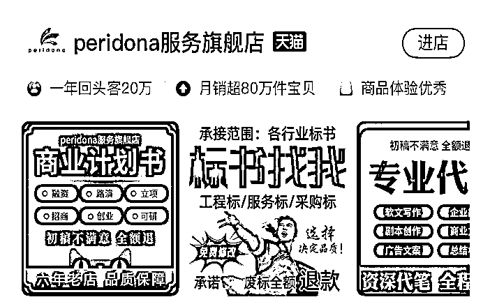
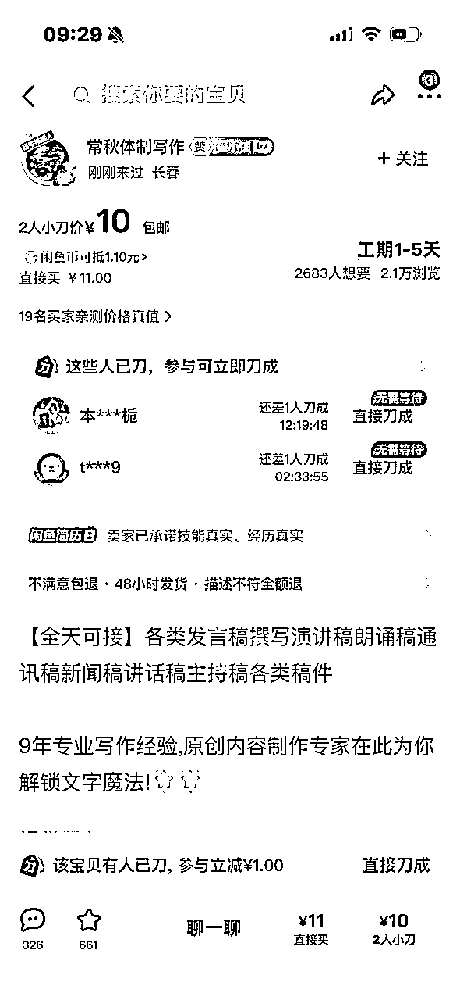
综上，ai代写流量可矩阵操作，存在高客单，如果做起来，跟高手拜师，不断提升眼界，会是一个低成本、易变现、天花板不错的项目，毕竟文稿类的，高客单代表着高利润。
2.项目实操
目前处于写手体验端，已跑通项0-1。这里主要依据我的写手端实操案例来拆解写手端流程：
1.跟紧手册，分别去体验不同文体的写作，然后在教练的提示词基础上做迭代（在此再次感谢生财和教练大大们的付出）
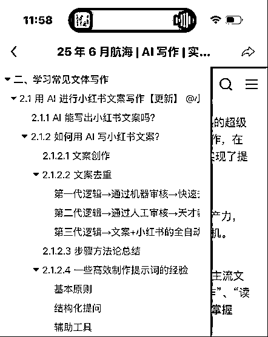
2.形成作品集，可以边写作不同文体，不断放到自己作品集里面，学完手册，作品集也就出来了
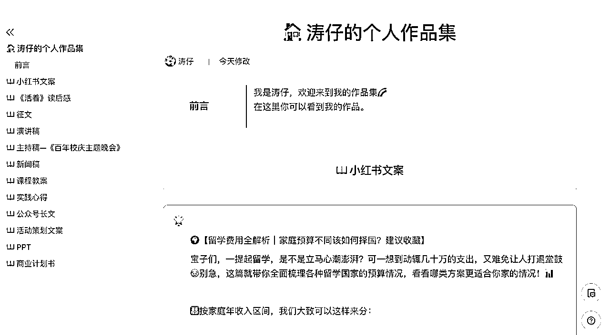
3.开始淘宝新手村，话不多说，投100家，做好记录。怎么投呢？批量投递，批量拍单，批量加好友，批量发消息给加上的好友，批量进群。担心投递过程中，别人发消息给我们，不回不好？别担心，节奏放我们手里，他觉得你不行，得，我把你换掉。
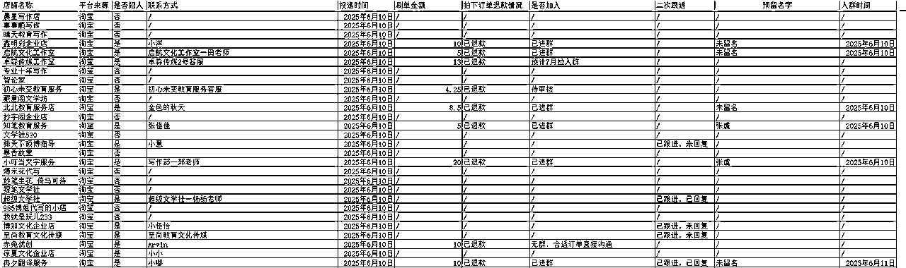
4.开始群里抢单，先了解一下各个群的抢单流程，然后按照人家要求去抢单。一般就是私聊和群里回复1抢单的两种形式。抢不到？再去扩群的量，然后抢到的单子，多关心下客服，给他留个好印象，也会有单子找你！
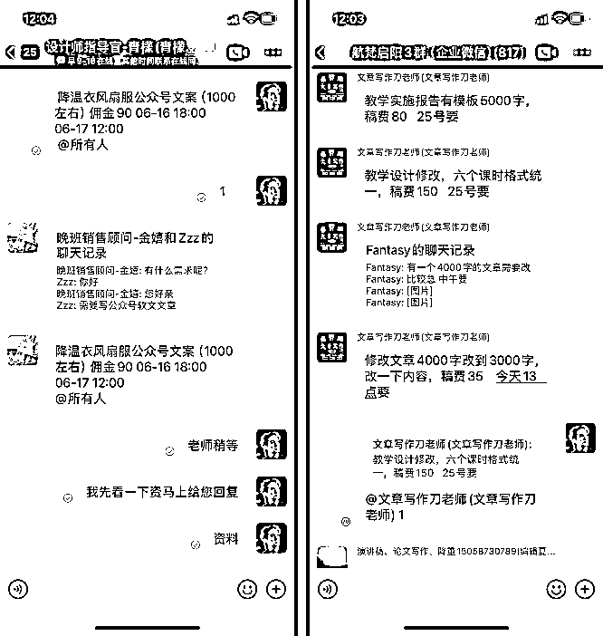
5.抢单的时候感觉自己做不了，不敢抢怎么办？相信我，抢了你就会干下来的（我一个经济学专业的，也把护理的内容写下来了）。如果实在怕，就依下面流程处理：回看一下海盐大大的AI+垂直领域大法，基本就能把这个事情办下来，有问题，先问AI(形成万事问AI的习惯)，再在群里问圈友。圈友答不了怎么办？付费给各位教练大大，开启付费咨询。
6.交付流程（最近总结出来的，故用两个案例展现）：
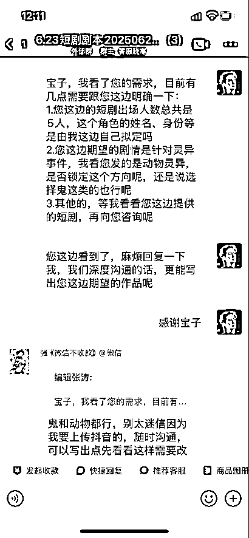
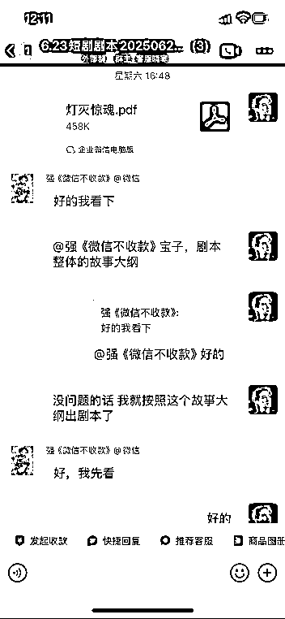
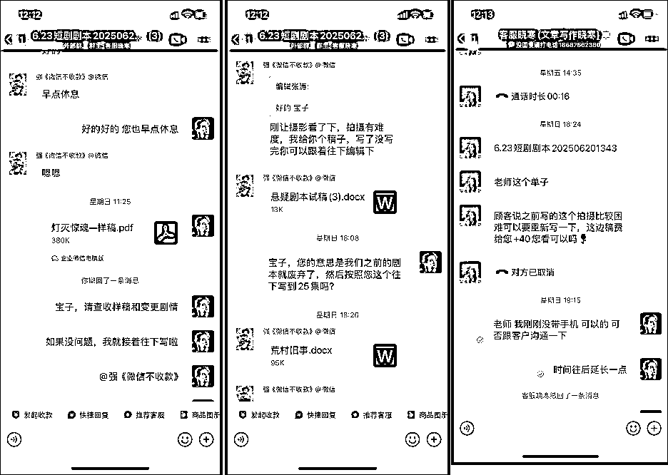
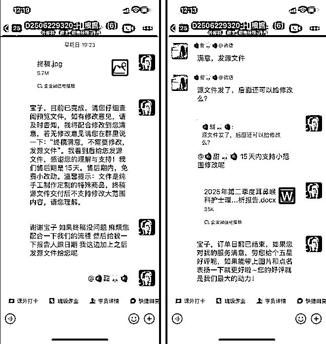
四、结尾
来生财之后，我觉得三点很重要：
1.要做一米宽，一万米深，不断在一个项目上滚雪球，才能成长为参天大树。
2.要做分享者，越分享，身边的势能会越强，同类人群会不断汇集。帮的人越多，你就越能成就自己。
3.坚持日拱一卒（类似士兵突击里面的许三多）。
最后，很荣幸能在生财遇到大家，也很荣幸能跟大家一起做同一个项目，也很感谢生财官方和教练大大。想说的很多，但我更希望能跟各位圈友山顶见。坚持下去，你会成功的！这句话送给大家，也送给我自己！